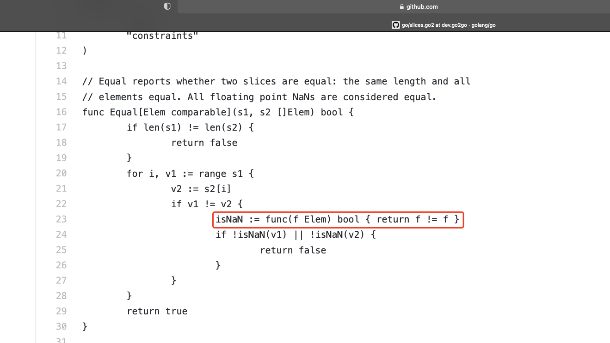
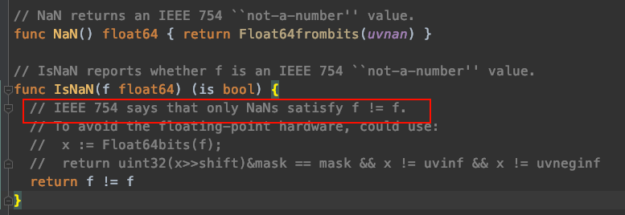

常量定义
// Ordered permits any ordered type: any type that supports
// the operations <, <=, >=, >, as well as == and !=.
type Ordered interface {
type int, int8, int16, int32, int64,
uint, uint8, uint16, uint32, uint64, uintptr,
float32, float64,
string
}
// Integer permits any integer type.
type Integer interface {
type int, int8, int16, int32, int64,
uint, uint8, uint16, uint32, uint64, uintptr
}
// Signed permits any signed integer type.
type Signed interface {
type int, int8, int16, int32, int64
}
// Unsigned permits any unsigned integer type.
type Unsigned interface {
type uint, uint8, uint16, uint32, uint64, uintptr
}
any 类型
// A Sender is used to send values to a Receiver.
type Sender[Elem any] struct {
values chan<- Elem
done <-chan struct{}
}
any：表示任何类型
泛型结构体与接口
链接地址：https://github.com/golang/go/blob/dev.go2go/src/cmd/go2go/testdata/go2path/src/graph/graph.go2
// A Graph is a collection of nodes. A node may have an arbitrary number
// of edges. An edge connects two nodes. Both nodes and edges must be
// comparable. This is an undirected simple graph.
type Graph[Node NodeC[Edge], Edge EdgeC[Node]] struct {
nodes []Node
}
// NodeC is the contraints on a node in a graph, given the Edge type.
type NodeC[Edge any] interface {
comparable
Edges() []Edge
}
// Edgec is the constraints on an edge in a graph, given the Node type.
type EdgeC[Node any] interface {
comparable
Nodes() (a, b Node)
}
// GraphP is a version of Graph that uses pointers. This is for testing.
// I'm not sure which approach will be better in practice, or whether
// this indicates a problem with the draft design.
type GraphP[type *Node NodeCP[Edge], *Edge EdgeCP[Node]] struct {
nodes []*Node
}
slices 中 怪异的 f != f
链接地址： https://github.com/golang/go/blob/dev.go2go/src/cmd/go2go/testdata/go2path/src/slices/slices.go2

问题一：为什么 f != f ？
主要考虑浮点数

问题二：isNaN 函数是否放 for 循环体之外更合适？
linked list
链接地址：https://github.com/golang/go/blob/dev.go2go/src/cmd/go2go/testdata/go2path/src/list/list.go2
// Element is an element of a linked list.
type Element[TElem any] struct {
// Next and previous pointers in the doubly-linked list of elements.
// To simplify the implementation, internally a list l is implemented
// as a ring, such that &l.root is both the next element of the last
// list element (l.Back()) and the previous element of the first list
// element (l.Front()).
next, prev *Element[TElem]
// The list to which this element belongs.
list *List[TElem]
// The value stored with this element.
Value TElem
}
// List represents a doubly linked list.
// The zero value for List is an empty list ready to use.
type List[TElem any] struct {
root Element[TElem] // sentinel list element, only &root, root.prev, and root.next are used
len int // current list length excluding (this) sentinel element
}
maps 结构
链接地址：https://github.com/golang/go/blob/dev.go2go/src/cmd/go2go/testdata/go2path/src/maps/maps.go2
// Keys returns the keys of the map m.
// The keys will be an indeterminate order.
func Keys[K comparable, V any](m map[K]V) []K {
r := make([]K, 0, len(m))
for k := range m {
r = append(r, k)
}
return r
}
metrics
链接地址：https://github.com/golang/go/blob/dev.go2go/src/cmd/go2go/testdata/go2path/src/metrics/metrics.go2
// Metric1 tracks metrics of values of some type.
type Metric1[T comparable] struct {
mu sync.Mutex
m map[T]int
}
type key2[T1, T2 comparable] struct {
f1 T1
f2 T2
}
// Metric2 tracks metrics of pairs of values.
type Metric2[T1, T2 comparable] struct {
mu sync.Mutex
m map[key2[T1, T2]]int
}
type key3[T1, T2, T3 comparable] struct {
f1 T1
f2 T2
f3 T3
}
// Metric3 tracks metrics of triplets of values.
type Metric3[T1, T2, T3 comparable] struct {
mu sync.Mutex
m map[key3[T1, T2, T3]]int
}
orderedmap
// Map is an ordered map.
type Map[K, V any] struct {
root *node[K, V]
compare func(K, K) int
}
// node is the type of a node in the binary tree.
type node[K, V any] struct {
key K
val V
left, right *node[K, V]
}
sets
链接地址：https://github.com/golang/go/blob/dev.go2go/src/cmd/go2go/testdata/go2path/src/sets/sets.go2
// A Set is a set of elements of some type.
type Set[Elem comparable] struct {
m map[Elem]struct{}
}
// Add adds an element to a set.
func (s Set[Elem]) Add(v Elem) {
s.m[v] = struct{}{}
}
slices
链接地址：https://github.com/golang/go/blob/dev.go2go/src/cmd/go2go/testdata/go2path/src/slices/slices.go2
// Equal reports whether two slices are equal: the same length and all
// elements equal. All floating point NaNs are considered equal.
func Equal[Elem comparable](s1, s2 []Elem) bool {
if len(s1) != len(s2) {
return false
}
for i, v1 := range s1 {
v2 := s2[i]
if v1 != v2 {
isNaN := func(f Elem) bool { return f != f }
if !isNaN(v1) || !isNaN(v2) {
return false
}
}
}
return true
}